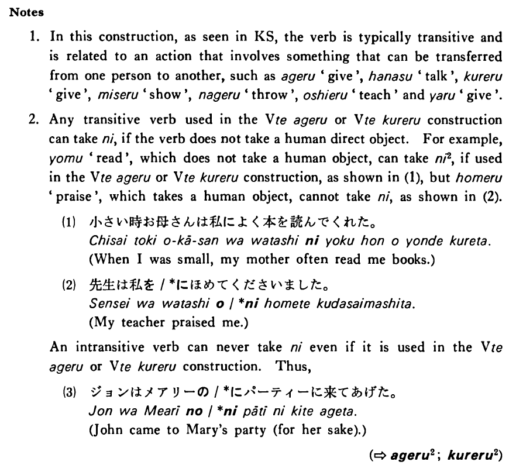

に (2) (B. 291)
- (ks).
- 私は母に手紙をよく書く・書きます。
- I often write letters to my mother.
- (a).
- 父は僕に時計を呉れた。
- My father gave me a watch.
- (b).
- 加藤先生はアメリカ人の学生に日本文学を教えている。
- Professor Kato is teaching Japanese literature to American students.
- (c).
- 私は妹にお金を少しやりました。
- I gave a little money to my younger sister.
- (d).
- 今井さんに電話しましたがいませんでした。
- I called Mr. Imai, but he wasn't there.
- (e).
- 大川先生は学生に色々な辞書を見せた。
- Professor Ookawa showed various dictionaries to his students.
